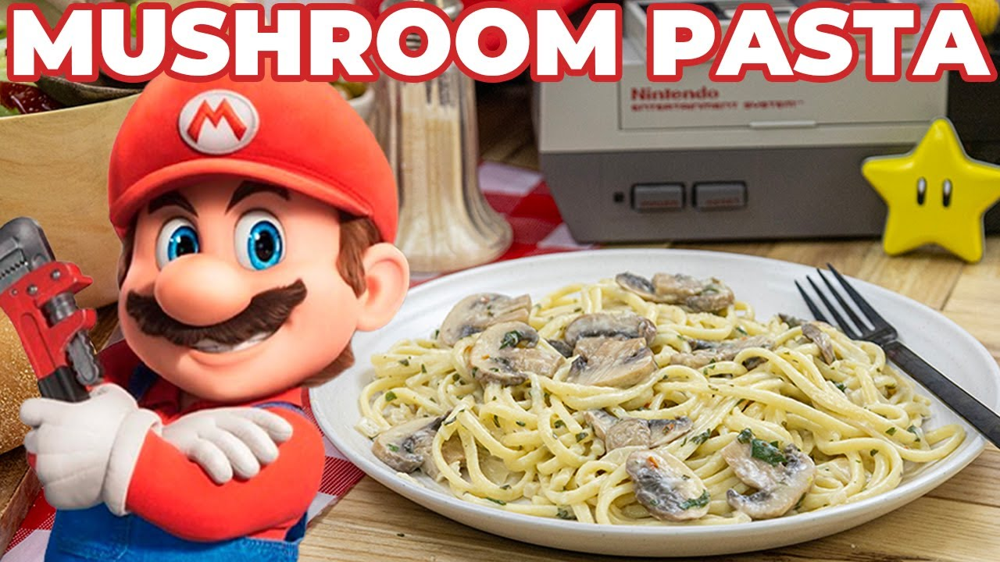

Pasta

Pasta taste very delicious and is rich in carbohydrates. Pasta taste very delicious and is rich in carbohydrates. Pasta taste very delicious and is rich in carbohydrates. Pasta taste very delicious and is rich in carbohydrates. Pasta taste very delicious and is rich in carbohydrates.
Ingredients
- All-purpose flour
- Eggs
- Olive oil
- Salt
Steps
- First, make a nest with the flour on a clean work surface.
- Next, use your hands to gently mix in the flour.
- Then, knead!
- When the dough comes together, shape it into a ball and wrap it in plastic wrap.
- After the dough rests, slice it into 4 pieces.
- Use a rolling pin or your hands to gently flatten one into an oval disk.
- Then, run it through the widest setting of your pasta maker
- Next, fold the dough… if you want to.
- Then, fold it in half lengthwise to form a rectangle.
- Once you've folded the dough, roll it out to your desired thickness.
- Repeat these steps with the remaining dough pieces.
- Finally, cut and cook the pasta.